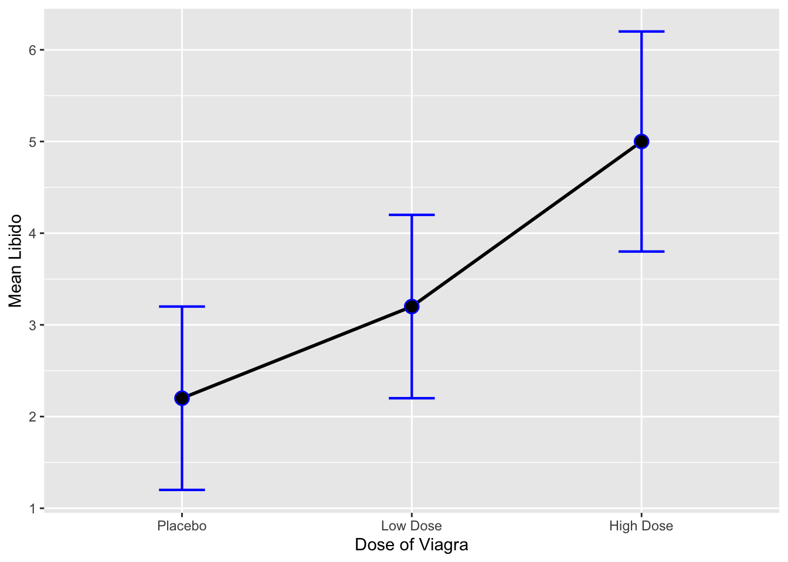
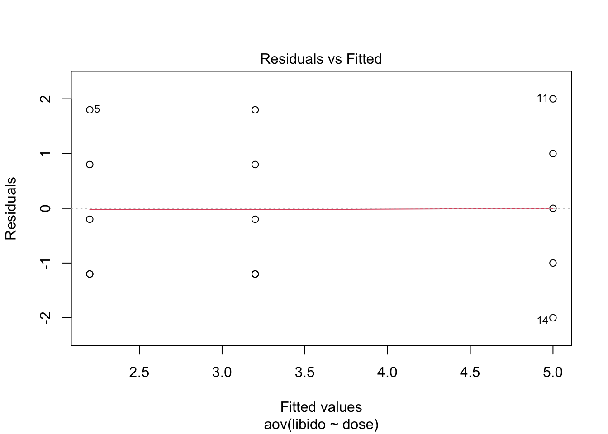
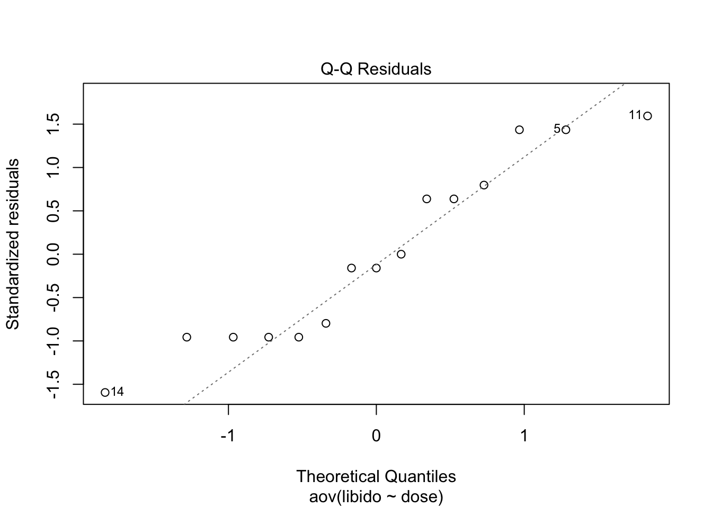
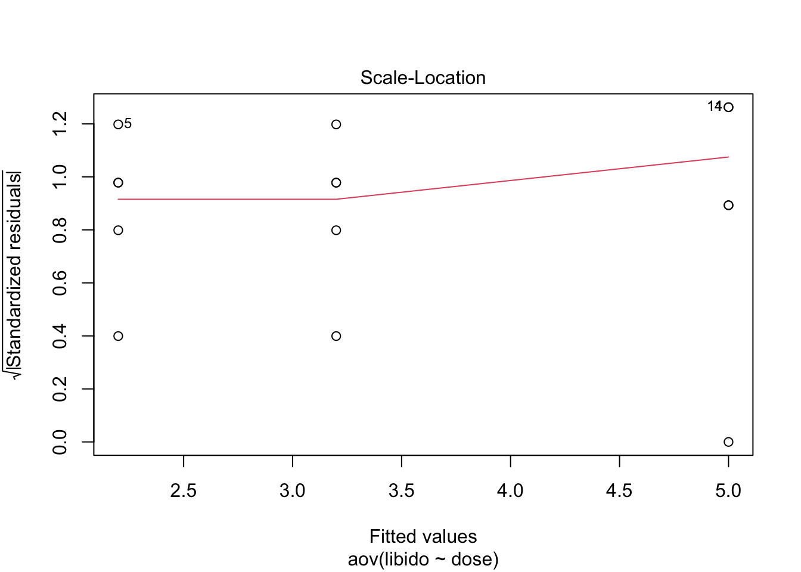
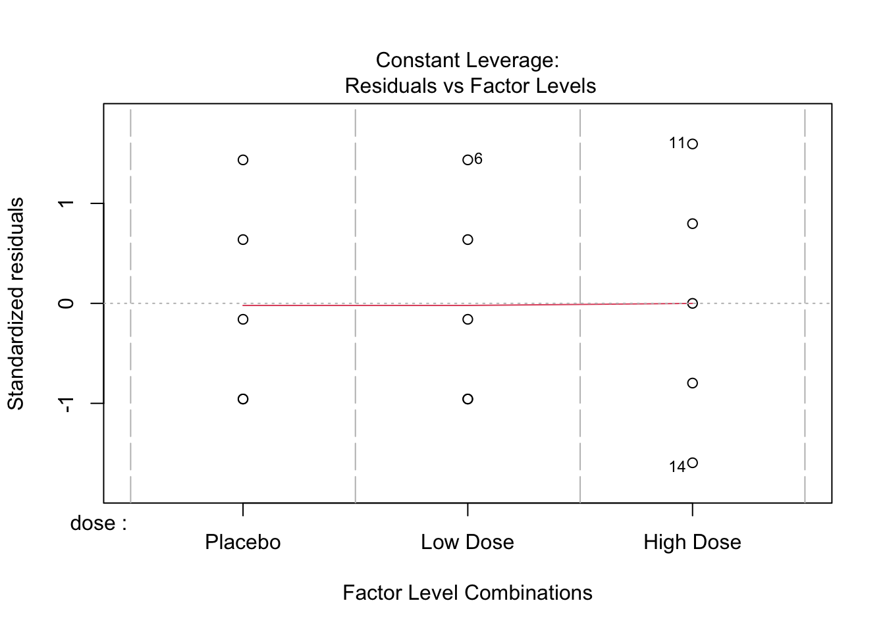

Chapter 10. Comparing several means: ANOVA (GLM 1)
Author
Daehyeog Lee
Published
November 12, 2023
Modified
November 23, 2023
10.1 What will this chapter tell me?
We can’t use a t-test when there are more than two conditions. Instead, we can use ANOVA. This chapter explains the theory of ANOVA when different participants are used (independent ANOVA).
10.2 The theory behind ANOVA
10.2.1. Inflated error rates
Why don’t we simply carry out several t-tests to compare all combinations of groups instead of doing ANOVA? Let’s pretend we have three groups to be tested. If we assume that each test is independent, the overall probability of no Type I errors (rejection of an accurate null hypothesis) is \(.95^3 = .857\). So, the probability of at least one Type I error is \(1-.857 = .143\). Therefore, across this group of tests, the probability of making a Type I error has increased from 5% to 14.3%. This kind of error is called familywise or experimentwise error rate.
10.2.2. Interpreting F
ANOVA tells us whether three or more means are the same. The F-statistic (F-ratio) is similar to the t-statistic because it compares the amount of systematic variance in the data to the amount of unsystematic variance. In other words, F is the ratio of the model to its error.
ANOVA tests for an overall effect, not the specific information about which groups were affected. If the experiment was conducted with three different groups, the F-ratio tells us that the means of these three samples are not equal. The F-ratio tells us only that the experimental manipulation has had some effect, but it doesn’t tell us specifically what the effect was.
10.2.3. ANOVA as regression
ANOVA is just a special case of regression. ANOVA is a way of comparing the ratio of systematic variance to unsystematic variance in an experimental study, and the ratio of these variances is known as the F-ratio. The F-ratio is also a way to assess how well a regression model can predict an outcome compared to the error within that model. When we test differences between means we are fitting a regression model and using F to see how well it fits the data, but the regression model contains only categorical predictors. So, just as the t-test could be represented by the linear regression equation, ANOVA can be represented by the multiple regression equation.
Suppose we are testing the hypothesis by taking three groups of participants. With three groups, we can use a multiple regression model with two dummy variables. We need a base category and we should choose the condition which we intend to compare the other groups (usually the control group). This alternative coding schemes are known as contrasts.
Call:
lm(formula = libido ~ dummy1 + dummy2, data = libidoData)
Residuals:
Min 1Q Median 3Q Max
-2.0 -1.2 -0.2 0.9 2.0
Coefficients:
Estimate Std. Error t value Pr(>|t|)
(Intercept) 2.2000 0.6272 3.508 0.00432 **
dummy1 2.8000 0.8869 3.157 0.00827 **
dummy2 1.0000 0.8869 1.127 0.28158
---
Signif. codes: 0 '***' 0.001 '**' 0.01 '*' 0.05 '.' 0.1 ' ' 1
Residual standard error: 1.402 on 12 degrees of freedom
Multiple R-squared: 0.4604, Adjusted R-squared: 0.3704
F-statistic: 5.119 on 2 and 12 DF, p-value: 0.02469
This test is significant, F(2, 12) = 5.12, p <.05. This ANOVA tells us that using group means to predict scores is significantly better than using the overall mean. In other words, the group means are significantly different.
The regression coefficient for the first dummy variable \(b_2\) is equal to the difference between the means of the high-dose group and the placebo group (5.0 - 2.2 = 2.8). The regression coefficient for the second dummy variable \(b_1\) is equal to the difference between the means of the low-dose group and the placebo group (3.2 - 2.2 = 1). For the base category (a control group), all dummy variables should be 0.
10.2.4. Logic of the F-ratio
The simplest model we can fit to a set of data is the grand mean. This basic model represents ‘no effect’ or ‘no relationship between the predictor variable and the outcome’.
We can fit a different model to the data collected that represents our hypothesis. We can fit a linear model or a model based on the means of different conditions. If the model fits the data well then it must be better than using the grand mean.
The intercept and one or more regression coefficients can describe the chosen model.
The bigger the regression coefficients, the greater the deviation between the line and the grand mean.
In correlational research, the regression coefficients represent the slope of the line. In experimental research, they represent the differences between group means.
The bigger the differences between group means, the greater the difference between the model and the grand mean.
If the differences between group means are large enough, then the resulting model will be a better fit of the data than the grand mean.
If this is the case, we can infer that our model (i.e., predicting scores from the group means) is better than not using a model (i.e., predicting scores from the grand mean). Put another way, our group means are significantly different.
Another way of saying this is that when the grand mean is used as a model, there will be a certain amount of variation between the data and the grand mean. When a model is fitted it will explain some of this variation, but some will be left unexplained. The F-ratio is the ratio of the explained to the unexplained variation.
10.2.5. Total sum of squares \(SS_T\)
Total sum of squares is used to find the total amount of variation within our data. We calculate the difference between each observed data point and the grand mean. We then square these differences and add them together.
The grand variance is the variation between all scores, regardless of the experimental condition from which the score came. Therefore, we can calculate the total sums of squares from the grand variance:
\(SS = s^2(N-1)\)
When we estimate population values, the degrees of freedom are typically one less than the number of scores used to calculate the population value. This is because to get these estimates we have to hold something constant in the population, which leaves all but one of the scores free to vary.
10.2.6. Model sum of squares \(SS_M\)
The model sum of squares tell us how much of the total variation can be explained by the fact that different data points come from different groups.
In chapter 7.2.3. we saw that the model sum of squares is calculated by taking the difference between the values predicted by the model and the grand mean. In ANOVA, the values predicted by the model are the group means. For each participant, the value predicted by the model is the mean for the group to which the participant belongs. The easiest way to calculate \(SS_M\) is the following:
Calculate the difference between the mean of each group and the grand mean.
Square each of these differences.
Multiply each result by the number of participants within that group.
Add the values for each group together.
For \(SS_M\), the degrees of freedom will always be one less than the number of parameters estimated.
10.2.7. Residual sum of squares \(SS_R\)
The residual sum of squares tells us how much of the variation cannot be explained by the model. This value is the amount of variation caused by extraneous factors. Knowing \(SS_T\) and \(SS_M\) already, the simplest way to calculate \(SS_R\) is: \(SS_R = SS_T - SS_M\).
From chapter 7.2.3., the residual sum of squares is the difference between what the model predicts and what was actually observed. In ANOVA, the values predicted by the model are the group means.
The distances between each data point and the group mean are squared and then added together to give the residual sum of squares. Given that we know the relationship between the variance and the sums of squares, we can restate residual sum of squares as taking the variance from each group and multiplying it by one less than the number of people in that group, and add the values from all the groups.
10.2.8. Mean squares
\(SS_M\) tells us the total variation that the regression model explains, and \(SS_R\) tells us the total variation that is due to extraneous factors. However, because both of these values are summed values they will be influenced by the number of scores that were summed. To eliminate this bias, we can calculate the average sum of squares, known as the mean squares, MS, which is simply the sum of squares divided by the degrees of freedom. Therefore, \(MS_M\) represents the average amount of variation explained by the model (systematic variation), whereas \(MS_R\) is a gauge of the average amount of variation explained by extraneous variables (unsystematic variation).
10.2.9. The F-ratio
The F-ratio is a measure of the ratio of the variation explained by the model and the variation explained by unsystematic factors. It can be calculated by dividing the model mean squares by the residual mean squares.
\(F = \frac{MS_M}{MS_R}\)
F-ratio is therefore a measure of the ratio of systematic variation to unsystematic variation. In experimental research, it is the ratio of the experimental effect to the individual differences in performance.
The F-ratio less than 1 implies that the effect is non-significant, because it means that \(MS_R\) is greater than \(MS_M\), which is same as that there is more unsystematic than systematic variance.
If the F-ratio value is greater than 1, it means that the experimental manipulation had some effect. However, we have to check whether our F-ratio is large enough to not be a chance result. To do this, we can compare the obtained value of F against the maximum value we would expect to get by chance if the group means were equal in an F-distribution with the same degrees of freedom (from the appendix). We can be confident if our value exceeds this critical value.
10.3. Assumptions of ANOVA
The variances in each experimental condition need to be fairly similar, observations should be independent and the dependent variable should be measured on at least an interval scale.
10.3.1. Homogeneity of variance
If Levene’s test is significant, then we can say that the variances are significantly different.
10.3.2. Is ANOVA robust?
There are evidences that suggest when group sizes are equal, the F-statistic can be quite robust to violations of normality. However, when group sizes are not equal, the accuracy of F is affected by skew, and non-normality also affects the power of F in quite unpredictable ways.
ANOVA is fairly robust in terms of the error rate when sample sizes are equal. However, when sample sizes are unequal, ANOVA is not robust to violations of homogeneity of variance.
10.4. Planned contrasts
The F-ratio tells us only whether the model fitted to the data accounts for more variation than extraneous factors, but it doesn’t tell us where the differences between groups lie. Therefore, it is necessary to carry out further analysis after conducting an ANOVA to find out which groups differ. There are two ways:
The first is to break down the variance accounted for by the model into component parts. This is known as planned contrasts.
The second is to compare every group but to use a stricter acceptance criterion such that the familywise error rate does not rise above .05. This is known as post hoc tests.
10.4.1. Choosing which contrasts to do
To do planned comparisons, the hypotheses must be derived before the date are collected. Planned comparisons take this logic a step further by breaking down the variation due to the experiment into component parts. For example:
Contrast 1: Placebo vs Low+High Dose
Contrast 2: Low dose vs High dose (We divide the Low+High Dose group.
First, if a group is singled out in one comparison, then it should not reappear in another comparison. We should always end up with one less contrast than the number of groups; there will be k-1 contrasts if k is the number of conditions we’re comparing. Second, each contrast must compare only two chunks of variance. Finally, in the majority of experimental designs we predict that the experimental conditions will differ from the control condition.
When we design a contrast that compares several groups to one other group, we are comparing the means of the groups in one chunk with the mean of the group in the other chunk.
10.4.2. Defining contrasts using weights
To get R carry out planned comparisons, we need to tell it which groups we would like to compare. To carry out contrasts we assign certain values to the dummy variables in the regression model. The values assigned to the dummy variables are known as weights.
Rule 1: Choose sensible comparisons.
Rule 2: Groups coded with positive weights will be compared against groups coded with negative weights.
Rule 3: The sum of weights for a comparison should be zero.
Rule 4: If a group is not involved in a comparison, automatically assign it a weight of 0.
Rule 5: For a given contrast, the weights assigned to the groups in one chunk of variation should be equal to he number of groups in the opposite chunk of variation.
When we multiply the weights for a particular group, these products should also add up to zero (Table 10.4). If the products add to zero then we can be sure that the contrasts are independent or orthogonal. We couldn’t look at the individual t-tests done on the regression coefficients because the familywise error rate is inflated. However, if the contrasts are independent then the t-tests done on the b coefficients are also independent and so resulting p-values are uncorrelated.
Call:
lm(formula = libido ~ dummy1 + dummy2, data = contrastData)
Residuals:
Min 1Q Median 3Q Max
-2.0 -1.2 -0.2 0.9 2.0
Coefficients:
Estimate Std. Error t value Pr(>|t|)
(Intercept) 3.4667 0.3621 9.574 5.72e-07 ***
dummy1 0.6333 0.2560 2.474 0.0293 *
dummy2 0.9000 0.4435 2.029 0.0652 .
---
Signif. codes: 0 '***' 0.001 '**' 0.01 '*' 0.05 '.' 0.1 ' ' 1
Residual standard error: 1.402 on 12 degrees of freedom
Multiple R-squared: 0.4604, Adjusted R-squared: 0.3704
F-statistic: 5.119 on 2 and 12 DF, p-value: 0.02469
The F-statistic for the model is the same as when dummy coding was used, showing that the model fit is the same; however, the regression coefficients have now changed. From the significance values of the t-tests we can see that our experimental groups were significantly different from the control, but that the experimental groups were not significantly different.
10.4.3. Non-orthogonal comparisons
Non0orthogonal contrasts are comparisons that are in some way related, and the best way to get them is to disobey Rule 1 in the previous section. With non-orthogonal contrasts, the comparisons we do are related and so the resulting test statistics and p-values will be correlated to some extent. For this reason, we should use a more conservative probability level to accept that a given contrast is statistically meaningful.
10.4.4. Standard contrasts
There are special contrasts that have been designed to compare certain situations. The contrast() function is used to code any categorical variable. The default is dummy coding in which each category is compared to the first category. contr.treatment() compares each category to a user-defined baseline category, so it can be non-orthogonal. contr.SAS() compares each category to the last category. contr.helmert() compares each category to the mean effect of all subsequent categories.
10.4.5. Polynomial contrasts: trend analysis
Polynomial contrast can be obtained using contr.poly().
10.5. Posthoc procedures
Post hoc tests consist of pairwise comparisons that are designed to compare all different combinations of the treatment group. Pairwise comparisons control the familywise error by correcting the level of significance for each test that the overall Type I error rate \(\alpha\) across all comparisons remains at .05. The Bonferroni correction is the most popular and easiest way, which divide \(\alpha\) by the number of comparisons, \(k\).
\(p_{crit} = \frac{\alpha}{k}\)
Bonferroni correction controls the familywise error rate, but there is a loss of statistical power, which means that the probability of rejecting an effect that does actually exist is increased (Type II error).
Holm’s method begins by computing the p-value for all of the pairs of groups in our data, and the ordering them from smallest to largest. We assign each p in the list, and we call the index of the list as j. Then, the critical value for a given comparison is the Type I error divided by the index variable j. The key idea behind this method is it is stepped. This means that as long as a comparison is significant, we proceed to the next one. But if we encounter a non-significant comparison, we stop and assume that all remaining comparisons are non-significant also.
Another method is the false discovery rate (FDR). The FDR is simply the proportion of falsely rejected null hypotheses. The Benjamini and Hochbergs’ FDR approach to multiple comparisons is less strict than Bonferroni-based methods because it is concerned with keeping the FDR rather than the familywise error rate under control.
It is important that we have an idea of which post hoc test perform best, and the criteria are:
Whether the test controls the Type I error rate
Whether the test controls the Type II error rate (i.e., has good statistical power)
Whether the test is reliable when the test assumptions of ANOVA have been violated.
10.5.1. Posthoc procedures and Type I (\(\alpha\)) and Type II error rates
There is a trade-off between the Type I error rate and the statistical power of a test. If a test is conservative, then it is likely to lack statistical power.
10.5.2. Posthoc procedures and violations of test assumptions
Most multiple comparison procedures perform relatively well under small deviations from normality. However, they perform badly when group sizes are unequal and when population variances are different. Bootstrapping or trimmed means and M-estimators can be helpful in these situations.
10.5.3. Summary of post hoc procedures
When we have equal sample sizes and we are confident that our population variances are similar, then Tukey has good power and tight control over the Type I error rate. Bonferroni is generally conservative, but if we want guaranteed control over the Type I error rate then this a good method. If there is any doubt over the underlying assumptions, then we have to use a robust method based on a bootstrap, trimmed means, or M-estimators.
Warning: Using `size` aesthetic for lines was deprecated in ggplot2 3.4.0.
ℹ Please use `linewidth` instead.

Approximately, all of the error bars overlap, indicating that there are no between-group differences.
To get some descriptive statistics, we can use by() and stat.desc() function:
by(viagraData$libido, viagraData$dose, stat.desc)
viagraData$dose: Placebo
nbr.val nbr.null nbr.na min max range
5.0000000 0.0000000 0.0000000 1.0000000 4.0000000 3.0000000
sum median mean SE.mean CI.mean.0.95 var
11.0000000 2.0000000 2.2000000 0.5830952 1.6189318 1.7000000
std.dev coef.var
1.3038405 0.5926548
------------------------------------------------------------
viagraData$dose: Low Dose
nbr.val nbr.null nbr.na min max range
5.0000000 0.0000000 0.0000000 2.0000000 5.0000000 3.0000000
sum median mean SE.mean CI.mean.0.95 var
16.0000000 3.0000000 3.2000000 0.5830952 1.6189318 1.7000000
std.dev coef.var
1.3038405 0.4074502
------------------------------------------------------------
viagraData$dose: High Dose
nbr.val nbr.null nbr.na min max range
5.0000000 0.0000000 0.0000000 3.0000000 7.0000000 4.0000000
sum median mean SE.mean CI.mean.0.95 var
25.0000000 5.0000000 5.0000000 0.7071068 1.9632432 2.5000000
std.dev coef.var
1.5811388 0.3162278
To compute Levene’s test, we can execute:
leveneTest(viagraData$libido, viagraData$dose, center = median)
Levene's Test for Homogeneity of Variance (center = median)
Df F value Pr(>F)
group 2 0.1176 0.89
12
The output shows that Levene’s test is very non-significant, which means the variances are very similar.
10.6.6. The main analysis
10.6.6.1. When the test assumptions are met
lm() and aov() can be used for ANOVA. For the current example, we are predicting libido from group membership (dose). Therefore, libido = dose + error.
We can create a model using lm() or aov() by executing:
viagraModel <-lm(libido ~ dose, data = viagraData)summary(viagraModel)
Call:
lm(formula = libido ~ dose, data = viagraData)
Residuals:
Min 1Q Median 3Q Max
-2.0 -1.2 -0.2 0.9 2.0
Coefficients:
Estimate Std. Error t value Pr(>|t|)
(Intercept) 2.2000 0.6272 3.508 0.00432 **
doseLow Dose 1.0000 0.8869 1.127 0.28158
doseHigh Dose 2.8000 0.8869 3.157 0.00827 **
---
Signif. codes: 0 '***' 0.001 '**' 0.01 '*' 0.05 '.' 0.1 ' ' 1
Residual standard error: 1.402 on 12 degrees of freedom
Multiple R-squared: 0.4604, Adjusted R-squared: 0.3704
F-statistic: 5.119 on 2 and 12 DF, p-value: 0.02469
viagraModel <-aov(libido ~ dose, data = viagraData)summary(viagraModel)
Df Sum Sq Mean Sq F value Pr(>F)
dose 2 20.13 10.067 5.119 0.0247 *
Residuals 12 23.60 1.967
---
Signif. codes: 0 '***' 0.001 '**' 0.01 '*' 0.05 '.' 0.1 ' ' 1
The effect labelled dose is the overall experimental effect. \(SS_M = 20.13\), \(MS_M = \frac{SS_M}{df_M}=10.067\).
For the residuals, which explains the unsystematic variation, \(SS_R = 23.60, MS_R = \frac{SS_R}{df_R} = 1.967\).
The F-ratio for dose is 5.12, and a probability of this F-ratio happens by chance is calculated as 0.0247, which is significant. Therefore, we can say that there was a significant effect of Viagra.
However, at this stage we still don’t know exactly what the effect of Viagra was (which group differed).
The aov() function also provides some plots:
plot(viagraModel)




For the first plot, we can see that the points are equally spread for the three groups, which implies that variances are similar across groups. The second plot is Q-Q plot, which tells us something about the normality of residuals in the model. Our
Q-Q plot suggests that we may not be able to assume normality of errors and should perhaps use a robust version of ANOVA instead.
10.6.6.2. When variances are not equal across groups
If Levene’s test is significant, it is reasonable to assume that population variances are different across groups. Then, we have to apply Welch’s F to our data, which makes adjustments for differences in group variances:
oneway.test(libido ~ dose, data = viagraData)
One-way analysis of means (not assuming equal variances)
data: libido and dose
F = 4.3205, num df = 2.0000, denom df = 7.9434, p-value = 0.05374
For our data, we didn’t need this test because our Levene’s test was not significant, indicating that our population variances were similar.
10.6.6.3. Robust ANOVA - it’s not for the weak of heart
To conduct robust procedures for one-way ANOVA, we have to convert the data in wide format:
To do planned comparisons in R, we have to set the contrast attribute of our grouping variable using the contrast() function and then re-create our ANOVA model using aov(). By using summary.lm(), we are asking for a summary of the parameters of the linear model, rather than the overall ANOVA:
summary.lm(viagraModel)
Call:
aov(formula = libido ~ dose, data = viagraData)
Residuals:
Min 1Q Median 3Q Max
-2.0 -1.2 -0.2 0.9 2.0
Coefficients:
Estimate Std. Error t value Pr(>|t|)
(Intercept) 2.2000 0.6272 3.508 0.00432 **
doseLow Dose 1.0000 0.8869 1.127 0.28158
doseHigh Dose 2.8000 0.8869 3.157 0.00827 **
---
Signif. codes: 0 '***' 0.001 '**' 0.01 '*' 0.05 '.' 0.1 ' ' 1
Residual standard error: 1.402 on 12 degrees of freedom
Multiple R-squared: 0.4604, Adjusted R-squared: 0.3704
F-statistic: 5.119 on 2 and 12 DF, p-value: 0.02469
The ‘low dose’ effect is the effect of low dose compared to placebo and is non-significant, whereas the effect of high dose compared to the placebo group is significant.
If we do not want dummy coding, but want to use our own planned comparisons, we can do this by resetting the contrast attribute associated with our predictor variable. There are some kinds of built in functions: contr.helmert(n), contr.poly(n), contr.treatment(n, base = x) and contr.SAS(n). In all cases, n is the number of groups in the predictor variable. For dose, this value will be 3:
10.6.7.1. Your own contrasts
Let’s pretend the weights for contrast 1 were -2 (placebo group), +1 (low-dose group), and +1 (high-dose group). We can create a new object called contrast1 and use the function c() to list the weights. We can do the same job for contrast 2. Then, we can bind them together using cbind(), and set them as the contrast attached to predictor variable, dose:
This command sets the contrast property of dose to contain the weights for the two contrasts that we want to conduct:
viagraData$dose
[1] Placebo Placebo Placebo Placebo Placebo Low Dose Low Dose
[8] Low Dose Low Dose Low Dose High Dose High Dose High Dose High Dose
[15] High Dose
attr(,"contrasts")
contrast1 contrast2
Placebo -2 0
Low Dose 1 -1
High Dose 1 1
Levels: Placebo Low Dose High Dose
Now the variable has a contrast attribute that contains the weights that we just specified. Contrast 1 compares the placebo group against the two experimental groups, and contrast 2 compares the low-dose group to the high-dose group.
Once we have set the contrast attribute, we can create a new model using aov() by executing:
viagraPlanned <-aov(libido ~ dose, data = viagraData)summary.lm(viagraPlanned)
Call:
aov(formula = libido ~ dose, data = viagraData)
Residuals:
Min 1Q Median 3Q Max
-2.0 -1.2 -0.2 0.9 2.0
Coefficients:
Estimate Std. Error t value Pr(>|t|)
(Intercept) 3.4667 0.3621 9.574 5.72e-07 ***
dosecontrast1 0.6333 0.2560 2.474 0.0293 *
dosecontrast2 0.9000 0.4435 2.029 0.0652 .
---
Signif. codes: 0 '***' 0.001 '**' 0.01 '*' 0.05 '.' 0.1 ' ' 1
Residual standard error: 1.402 on 12 degrees of freedom
Multiple R-squared: 0.4604, Adjusted R-squared: 0.3704
F-statistic: 5.119 on 2 and 12 DF, p-value: 0.02469
The significance value of the contrast is given in the final column, and this value is two-tailed. For the first contrast, if we had used this contrast to test the general hypothesis that the experimental groups would differ from the placebo group, then we should use this two-tailed value. However, in reality, we tested the hypothesis that the experimental groups would increase libido above the levels seen in the placebo group: this hypothesis is one-tailed. For contrast 2, we also had a one-tailed hypothesis (that a high dose of Viagra would increase libido significantly more than a low dose).
In summary, the planned contrasts revealed that taking Viagra significantly increased libido compared to a control group, t(12) = 2.47, p = 0.0293/2, and taking a high dose significantly increased libido compared to a low dose, t(12) = 2.03, p = 0.0652/2 (one-tailed).
10.6.7.2. Trend analysis
To conduct a trend analysis we can use contr.poly(). To detect a meaningful trend, we need to have coded these groups in ascending order. To obtain a trend analysis, we set the contrast attribute of the predictor variable by executing:
contrasts(viagraData$dose) <-contr.poly(3)viagraTrend <-aov(libido ~ dose, data = viagraData)summary.lm(viagraTrend)
Call:
aov(formula = libido ~ dose, data = viagraData)
Residuals:
Min 1Q Median 3Q Max
-2.0 -1.2 -0.2 0.9 2.0
Coefficients:
Estimate Std. Error t value Pr(>|t|)
(Intercept) 3.4667 0.3621 9.574 5.72e-07 ***
dose.L 1.9799 0.6272 3.157 0.00827 **
dose.Q 0.3266 0.6272 0.521 0.61201
---
Signif. codes: 0 '***' 0.001 '**' 0.01 '*' 0.05 '.' 0.1 ' ' 1
Residual standard error: 1.402 on 12 degrees of freedom
Multiple R-squared: 0.4604, Adjusted R-squared: 0.3704
F-statistic: 5.119 on 2 and 12 DF, p-value: 0.02469
The result breaks down the experimental effect to see whether it can be explained by either a linear (dose.L) or a quadratic (dose.Q) relationship in the data. For the linear trend, t = 3.16 and it is significant at p = .008. Therefore, we can say that as the dose of Viagra increased from nothing to a low dose to a high dose, libido increased proportionately. For the quadratic trend, it tests whether the pattern of means is curvilinear. The result suggests that the means cannot be represented by a curve, t = 0.52, p = 0.612.
10.6.8. Post hoc tests using R
10.6.8.1. Bonferroni and related methods
Bonferroni and related methods (Holm, Benjamini-Hochberg, Hochberg) can be implemented using the pairwise.t.test() function that is built into R:
Pairwise comparisons using t tests with pooled SD
data: viagraData$libido and viagraData$dose
Placebo Low Dose
Low Dose 0.845 -
High Dose 0.025 0.196
P value adjustment method: bonferroni
Pairwise comparisons using t tests with pooled SD
data: viagraData$libido and viagraData$dose
Placebo Low Dose
Low Dose 0.282 -
High Dose 0.025 0.098
P value adjustment method: BH
Both commands specify libido as the outcome variable, and dose as the grouping variable. For the Bonferroni corrected values, the placebo group is compared to the low-dose group and reveals a non-significant difference (.845 > .05). When compared to the high-dose group there is a significant difference (.025 < .05).
Our planned comparison showed that any dose of Viagra produced a significant increase in libido, yet the post hoc tests indicate that a low dose does not. This contradiction happened because the contrast we set is different. For the first planned comparison (experimental group vs placebo group), we compared the average of the two group means of the experimental groups ((3.2 + 5.0) / 2 = 4.1) to the mean of the placebo group (2.2). So, it was assessing whether the difference between these values (4.1 - 2.2 =1.9) was significant. In the post hoc test, when the low dose is compared to the placebo, the contrast is testing whether the difference between the means of these two groups (3.2 - 2.2 = 1) is significant. Therefore, it is possible to have apparently contradictory results from planned contrasts and post hoc comparisons. This example illustrates how careful we must be in interpreting planned contrasts.
Another comparison is the low-dose group compared to the high-dose group, which is not significant (0.196 > 0.05). This result contradicts the planned comparisons (contrast 2). This contradiction is because the post hoc tests by their nature are two-tailed, and contrast 2 was significant only when considered as a one-tailed hypothesis. However, even at the two-tailed level the planned comparison was closer to significance. From this, we can see that post hoc procedures are more conservative.
10.6.8.2. Tukey and Dunnett
Tukey and Dunnett can be implemented using the glht() function that is part of the multicomp package:
The output only confirms that the difference only between the high dose and placebo group is significant. The confidence intervals also confirms this because they do not cross zero for the comparison of the high dose and placebo group, which means that the true difference between group means is not likely to be zero.
We can obtain Dunnett post hoc tests for the Viagra data by executing:
Simultaneous Tests for General Linear Hypotheses
Multiple Comparisons of Means: Dunnett Contrasts
Fit: aov(formula = libido ~ dose, data = viagraData)
Linear Hypotheses:
Estimate Std. Error t value Pr(>|t|)
Low Dose - Placebo == 0 1.0000 0.8869 1.127 0.4459
High Dose - Placebo == 0 2.8000 0.8869 3.157 0.0152 *
---
Signif. codes: 0 '***' 0.001 '**' 0.01 '*' 0.05 '.' 0.1 ' ' 1
(Adjusted p values reported -- single-step method)
Since we have used base = 1, Dunnett’s test doesn’t compare the high and low-dose groups. The result of Dunnett’s test is same as the result from Tukey test.
10.6.8.3. Run for cover - it’s robust post hoc tests
# lincon(viagraWide)# mcppb20(viagraWide)
10.7. Calculating the effect size
R doesn’t routinely provide an effect size for one-way independent ANOVA. However, we know that
\(R^2 = \frac{SS_M}{SS_T}\)
We can get this value from the main ANOVA by using summary.lm() on the object we create with aov(). In the context of ANOVA, \(r^2\) is usually called eta squared, \(\eta^2\).
However, this measure of effect size is slightly biased because it is based purely on sums of squares from the sample and no adjustment is made for the fact that we’re trying to estimate the effect size in the population. Therefore, we often use a slightly more complex measure called omega squared, \(\omega^2\).
This has led to a slightly lower estimate than using r, and in general \(\omega\) is a more accurate measure. People normally report \(\omega^2\), and it has been suggested that values of .01, .06 and .14 represent small, medium and large effects respectively.
The mes() function takes the mean, SD, n of two groups in order, and calculates the effect sizes:
# Comparison of placebo and low-dose groupmes(2.2, 3.2, 1.3038405, 1.3038405, 5, 5)
An alternative is to compute effect sizes for the orthogonal contrasts. We can use an equation that converts t into r :
\(r_{contrast} = \sqrt{\frac{t^2}{t^2+26}}\)
We could write a function:
rcontrast <-function(t, df) { r <-sqrt(t^2/(t^2+df))print(paste("r = ", r)) }
The degrees of freedom can be calculated as in normal regression as \(N - p - 1\), in which N is the total sample size (in this case 15), and p is the number of predictors (in this case 2, the two contrast variables). Therefore, the degrees of freedom are 15 - 2 - 1 = 12:
rcontrast(2.474, 12)
[1] "r = 0.581182458413787"
rcontrast(2.029, 12)
[1] "r = 0.505407970122564"
Both effects are fairly large.
10.8. Reporting results from one-way independent ANOVA
When we report ANOVA, we have to give details of the F-ratio and the degrees of freedom from which it was calculated.
There was a significant effect of Viagra on levels of libido, F (2, 12) = 5.12, p < .05, \(\omega^2\) = .60.
We can also report our planned contrasts or group comparisons:
Planned contrasts revealed that taking any dose of Viagra significantly increased libido compared to having a placebo, t(12) = 2.47, p < .05 (one-tailed), and that taking a high dose significantly increased libido compared to taking a low dose, t(12) = 2.03, p < .05 (one-tailed).
Despite fairly large effect sizes, Bonferroni tests revealed non-significant differences between the low-dose group and both the placebo, p = .845, d = -0.77, and high dose, p = .196, d = -1.24, groups. The high-dose group, however, had a mean almost 2 standard deviations bigger than the placebo group, p = .025, d = -1.93.